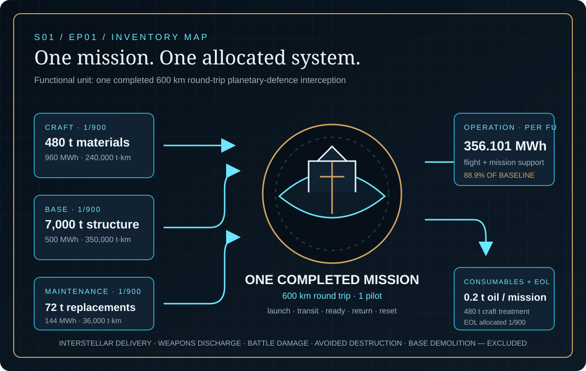
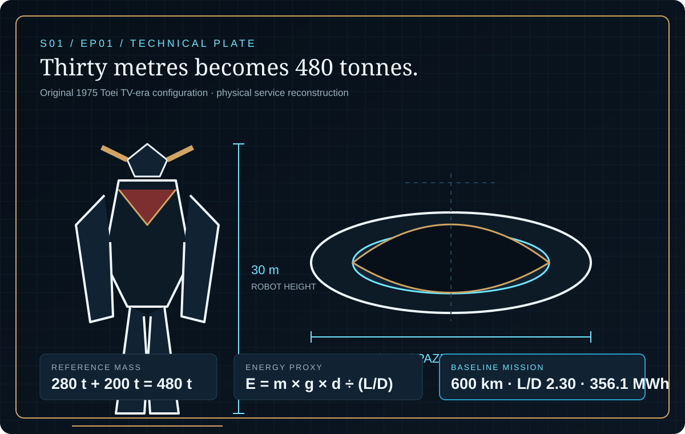
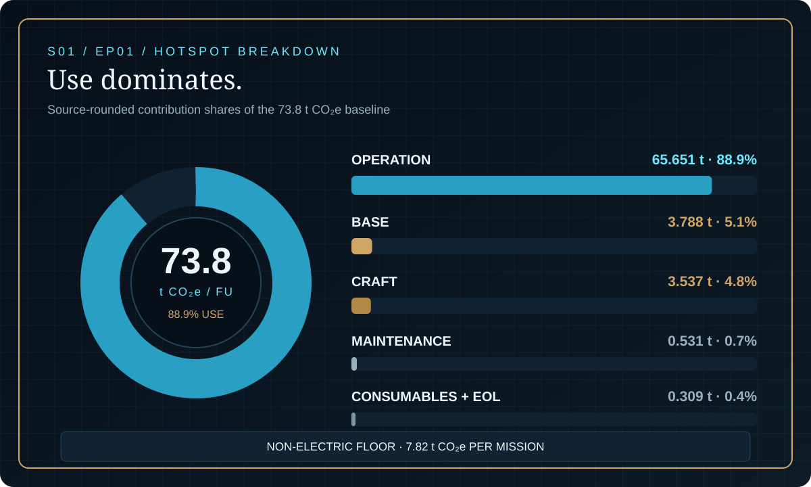

EPISODE #01 · SEASON I · MACHINES & WORLDS
UFO Robot
What does one planetary-defence mission cost the climate?
Science fiction, reconstructed through life-cycle logic. Impossible technologies, reconstructed as traceable systems.
THE SUBJECT
A giant defender becomes a mission system.
The approved episode reconstructs the original 1975 Toei TV-era configuration as a 30 m, 280 t robot combined with a 34 m, 200 t Spazer. Together they form a 480 t planetary-defence craft operated from an underground base.
The functional unit is one completed 600 km round trip: launch, transit, interception readiness, return and post-mission reset. The model assigns one mission of energy and consumables plus 1/900 of craft manufacture, supporting base, lifetime maintenance and craft end-of-life.
30 m robot
The documented narrative height anchors the physical reconstruction.
480 t system
A 280 t robot and an estimated 200 t Spazer form the combined reference mass.
356.1 MWh
Baseline flight and support energy per completed mission.
88.9% operation
Mission electricity dominates the approved baseline result.
VISUAL MODEL
The robot is only the centre
The model follows the craft, underground base, mission energy, maintenance, consumables and end-of-life through one completed defence mission.


DETAILED LIFE CYCLE INVENTORY
Every stage carries a quantity
Stage totals and allocations reproduce the approved episode. The source-rounded stage contributions sum to 73.816 t CO₂e and support the published 73.8 t CO₂e headline.
| Stage | Component / activity | Activity data | Climate change | Modelling basis |
|---|---|---|---|---|
| Craft | Robot and Spazer manufacture and deployment | 480 t materials · 960 MWh · 240,000 t·km | 3.537 t CO₂e · 4.8% | Allocated 1/900 across a 30-year life at 30 missions per year. |
| Base | Underground support base | 6,000 t concrete · 1,000 t steel · 500 MWh · 350,000 t·km | 3.788 t CO₂e · 5.1% | Allocated 1/900. Base demolition is excluded; the base remains available for adaptive reuse. |
| Operation | Flight and mission support electricity | 356.101 MWh per completed mission | 65.651 t CO₂e · 88.9% | 341.1 MWh flight proxy plus 15.0 MWh support; charged per functional unit. |
| Maintenance | Lifetime replacements, energy and logistics | 72 t replacements · 144 MWh · 36,000 t·km over life | 0.531 t CO₂e · 0.7% | Allocated 1/900 across the declared lifetime mission count. |
| Consumables + EOL | Mineral-oil-equivalent consumable and craft treatment | 0.2 t oil equivalent per mission · 480 t craft at 90% metal treatment / 10% landfill · 96 MWh | 0.309 t CO₂e · 0.4% | Consumable charged per mission; end-of-life allocated 1/900. No recycling credit is introduced. |
| Approved baseline | 73.8 t CO₂e | One completed 600 km round-trip interception. | ||
Included
Raw materials, craft and deployment, underground base, mission energy, maintenance, consumables and craft end-of-life.
Excluded
Interstellar delivery, direct fictional emission factors, weapons discharge, battle damage, avoided destruction and base demolition.
Cut-off
The boundary ends after craft treatment. The underground base remains available for adaptive reuse.
Energy proxy
The model uses E = m × g × d ÷ (L/D). It is a service proxy, not a direct factor for antigravity or photonic propulsion.
EMISSION FACTOR LEDGER
The factor must match the flow
DEFRA is used only where activity, unit, geography, technology and boundary are representative.
| Flow | Unit | Factor | Source | Role in model |
|---|---|---|---|---|
| Electricity · lifecycle | kg CO₂e/kWh | 0.18436 | UK Government 2026 | Craft, base, operation, maintenance and end-of-life energy. |
| Steel · cold rolled | kg CO₂e/kg | 2.56 | worldsteel | Craft and base material production. |
| Aluminium · global | kg CO₂e/kg | 14.8 | IAI | Craft material production. |
| Copper · global | kg CO₂e/kg | 4.4 | ICA | Craft material production. |
| CFRP · manufacture | kg CO₂e/kg | 29.0 | DAS 2011 | Craft composite production. |
| Freight · HGV | kg CO₂e/t·km | 0.12715 | UK Government 2026 | Inbound craft, base and maintenance logistics. |
| Concrete | kg CO₂e/kg | 0.118803 | Approved episode factor ledger | Underground base construction. |
| Plastics | kg CO₂e/kg | 3.170507 | Approved episode factor ledger | Craft polymer fraction. |
| Electronics | kg CO₂e/kg | 24.865476 | Approved episode factor ledger | Craft electronics fraction. |
| Specialty material | kg CO₂e/kg | 3.821949 | Approved episode factor ledger | Declared specialty-material fraction. |
| Mineral oil | kg CO₂e/kg | 1.401 | Approved episode factor ledger | Mission consumable. |
| Metal treatment | kg CO₂e/t | 4.65358 | Approved episode factor ledger | 90% of craft end-of-life mass. |
| Landfill | kg CO₂e/t | 9.00687 | Approved episode factor ledger | 10% of craft end-of-life mass. |
HOTSPOT
Use dominates the mission
Operation contributes 65.651 t CO₂e, or 88.9% of the approved baseline. The remaining life-cycle stages form a 7.82 t non-electric floor per mission.

Main result
73.8 t CO₂e
One completed planetary-defence mission.
Mission electricity
65.651 t CO₂e
88.9% of the approved baseline.
Non-electric floor
7.82 t CO₂e
Craft, base, maintenance, consumables and end-of-life remain.
Lifetime allocation
900 missions
30 years at 30 missions per year.
SENSITIVITY · AERODYNAMICS
Shape can triple the result
L/D 4.50 · lifting body: 43.1 t CO₂e.
L/D 2.30 · baseline: 73.8 t CO₂e.
L/D 1.15 · low efficiency: 136.7 t CO₂e.
Mass and mission remain locked. Only lift-to-drag changes, producing a 3.17× high-to-low range.
SENSITIVITY · ELECTRICITY
The energy source sets the range
0.012 kg CO₂e/kWh · low-carbon: 12.1 t CO₂e.
0.18436 · UK 2026 baseline: 73.8 t CO₂e.
0.490 · carbon-intensive: 183.2 t CO₂e.
The tested range is 12.1–183.2 t CO₂e per mission. The 7.82 t non-electric floor remains.
INTERPRETATION
The mission is an energy system
Construction matters, but neither the 480 t craft nor the underground base controls the baseline. Aerodynamic performance and electricity supply move the result far more strongly than the allocated hardware.
THE VERDICT
“A heroic machine is still a supply chain in motion.”